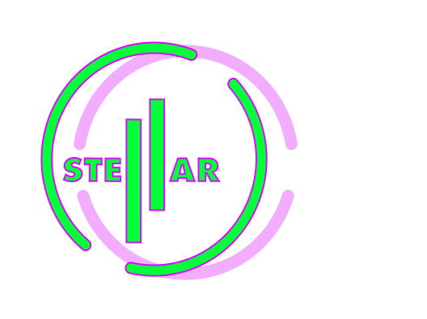
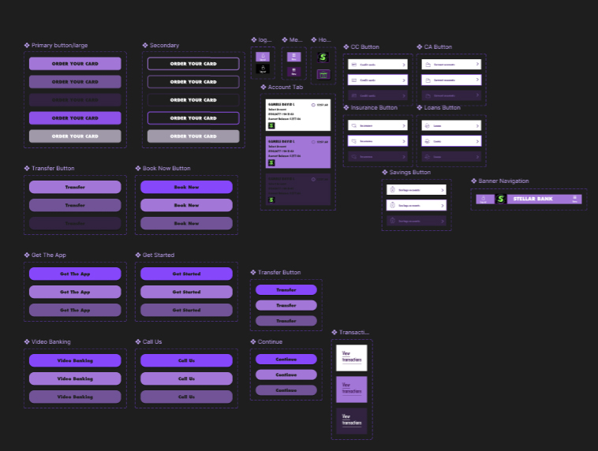

I can't express enough how much of a learning curve this assigment was for me. Developing a brand Identity takes on many considerations. The name itself you have to work out. Ofcourse you take the research into your target audience but in essence It's something you feel you can resonate with, otherwise; not only are you not gonna enjoy the work but it will reflect in the work you produce. Stellar for me is a word that embodies that notion of being part of something bigger than yourself and originally that aspirational notion was the way I approched this project.
Original Concept

With the word Stellar itself, my instincts steered me towards the stars and I began looking at star systems and patterns, this progressed to me landing on my own Star sign itself. I loved this idea and ran with it, so much so I Animated a brand Tile and created some mockups of marketing posters.


.jpg)
This had a very distinctive look and with the colour psychology I thought I was really onto creating a brand that had an identity that had that mystical vibe with it. Lets just say I'm glad I'm attending University. After speaking to my lecturer he pointed out that yes it was distinctive but the star sign was only really personal to me and to reach a wider audience. I'd really have to redesign my logo...
Reworking Logo

I'm just glad I got to speak to my lecturer when I did. With our project came a brandtile, an online banking prototype, a landing page and a document containing a set of guidelines in which our brand should be used. Without his guidance I would have created a lot of material that just didn't meet the mark.
With this design I went against the grain, I was told using this design with a simple black or white would have more of an impact. Within my brand guidelines it stated that using the logo this way is fine. I understood the colours I used for marketing and even the splash page of the online Banking app gave off that mystical vibe & for that reason I felt it should be incorperated within my idendity in some way or form.
Brandtile

My design tile still carried on with the aspiarional hook. Using A supercar and a custom made home were the first things that came to mind. Like I said before, this was a learning curve. I thought of the coolest things you could buy with financial security. Again my lecturer pointed out, not every student is gonna want a supercar and a fancy house. This helped me steer the design of my banking application with a financial security check. Giving the customer help and guidance with their finances to ensure a better stadegy for their spending. In the end I kept these illustrations in because I liked the notion of having that security where if u wanted you could spend it on what ever your heart desired.

Before I started University, graphic and effects were my main area of expertise. I was acually told to lay of the effects with my work. For the most part you really dont need this skillset to be a successful UX Developer. In saying that though I still dabbled in it throughout the year and you would see evidence of this throughout my notion blog.
Component Creation
Throughout my entire first year of University I felt a bit like a fish out of water, an Illustrator with a thing for effects trying to fit into A UXDesign world. This was very much the case and until I was given this tutorial on creating components I was seriously considering switching courses. It may seem silly but until I seen how you can create engaging interactive graphics I really did'nt feel I fitted in with the industry. Now I know how this is done and how much it ties in with my past experience, I know with a nice flow within interfaces my skillset can really enhance the user experience.